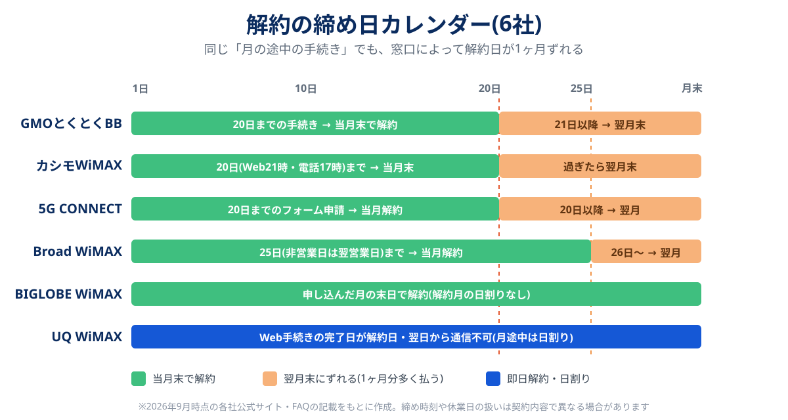

WiMAXの解約でいちばん多い失敗は、手続きのやり方そのものではなく「何日までに出せば今月で終わるのか」を知らずに1ヶ月分を余計に払うことです。GMOとくとくBBとカシモWiMAXは毎月20日、Broad WiMAXは25日が区切りで、21日や26日に手続きすると解約日は翌月末に回ります。一方でUQ WiMAXはWeb手続きを終えた日がそのまま解約日になり、翌日から通信できなくなります。同じ「WiMAXの解約」でも、窓口によって動き方が正反対なのです。
この記事では、2026年9月時点で各社の公式サイト・FAQに書かれている内容を確認し、6社の解約窓口・締め日・日割りの有無・端末返却を1枚の表とカレンダー図にまとめました。解約の「いつが得か」(端末残債や解除料の計算)はWiMAXの解約タイミングで扱っているので、こちらは「実際にどう手続きするか」に絞っています。
まず契約先(UQか、GMO・BIGLOBEなどのプロバイダか)を確かめ、その窓口の締め日の3営業日前までにWebか電話で手続きするのが基本です。20日締め(GMO・カシモ・5G CONNECT)、25日締め(Broad)、申込月の末日(BIGLOBE)、手続き日が解約日(UQ)の4タイプに分かれます。購入した端末は返却不要の窓口が多い一方、レンタル端末は期限内の返送が必要です。乗り換えるなら新しい回線の開通を確認してから解約する順番を守ってください。
解約金で悩まない窓口に移るなら:BIGLOBE WiMAXの条件を見る公式サイトへ →PR・申し込み前に月額割引の条件と端末代を確認できます


最初にやること:契約先を特定する
WiMAXは、回線設備を持つUQコミュニケーションズ(UQ WiMAX)と、その回線を借りてサービスを売るプロバイダ(GMOとくとくBB・BIGLOBE・カシモ・Broadなど)に分かれています。解約の窓口は回線の持ち主ではなく、あなたが申し込んだ会社です。UQ WiMAXの公式サイトも、解約を検討している人に向けて「ご契約のWiMAXサービス提供事業者までお問い合わせください」と案内しています。プロバイダ経由の契約なのにUQへ電話しても、手続きはできません。
「どこで契約したか覚えていない」という人は、次の3か所を上から順に確認すると、たいてい5分で見つかります。
| 確認する場所 | 見るポイント |
|---|---|
| クレジットカード・口座の明細 | 毎月の請求名義(「GMO」「BIGLOBE」「カシモ」など)がそのまま契約先 |
| メールの受信箱 | 「WiMAX」「お申し込み完了」「端末発送」で検索。送信元のドメインで判別できる |
| 端末の箱・同梱書類 | 契約書面(重要事項説明書)に事業者名とお客さま番号が載っている |
契約先がわかったら、同時にマイページのログインID・パスワードとお客さま番号(会員ID)を手元にそろえます。Web解約はこの2つがないと進めず、電話でも本人確認で最初に聞かれます。パスワードを忘れている場合は、再発行に郵送が必要な窓口もあるため、締め日直前に気づくと間に合わないことがあります。
6社の解約窓口・締め日・日割り一覧
主要6社の公式サイト・FAQ・重要事項説明書の記載を並べました。「公式に明記なし」は、確認した範囲で記載が見つからなかった項目です。手続き前に必ず自分の契約先の最新ページで確認してください。
| 窓口 | 手続き方法 | 当月末で解約できる締め | 解約月の日割り | 端末の返却 |
|---|---|---|---|---|
| GMOとくとくBB WiMAX | BBnavi(マイページ)・電話(0570-045-109)・問い合わせフォーム | 毎月20日(21日以降は翌月末) | なし(1ヶ月分満額) | 購入端末・SIMは返却不要 |
| BIGLOBE WiMAX +5G | Web・電話(0120-827-193/9:00〜18:00・365日) | 申し込んだ月の末日で解約 | なし(1ヶ月分満額) | 公式に明記なし(割賦の残金は解約後も分割で支払い) |
| カシモWiMAX | マイページ・電話・問い合わせフォーム | 20日。マイページは21時まで、電話・フォームは17時まで | 公式に明記なし(月末解約のため当月分は1ヶ月分) | 通常解約は返却不要(所有権がお客さまに移る) |
| Broad WiMAX | サポートサイトのWeb申請・解約専用電話 | 毎月25日(非営業日なら翌営業日) | 公式に明記なし | 公式に明記なし(契約プランで確認) |
| 5G CONNECT | 解約申請フォーム | 毎月20日(以降は翌月解約) | 公式に明記なし | レンタルは返送が必要(期限・手数料あり) |
| UQ WiMAX | my UQ WiMAX(24時間)・お客さまセンター(9:00〜20:00・年中無休) | 締め日の考え方なし。Webは手続き完了日が解約日(電話なら月末日指定の予約も可) | 月途中の解約は日割り | 公式に明記なし |
※ 2026年9月時点の各社公式サイト・FAQ・重要事項説明書の記載。受付時間・電話番号・締め時刻は変更されることがあります。

締め日は4タイプ。自分の動き方を決める
表を見ると、6社の締め日の考え方は4つの型に整理できます。型ごとに「いつ動けばいいか」が違うので、自分の窓口がどれに当たるかを先に決めてしまいましょう。
①20日締め型(GMOとくとくBB・カシモ・5G CONNECT)
もっとも注意が必要な型です。GMOとくとくBB WiMAXの場合、前月21日から当月20日までの手続きが当月末解約、21日以降は翌月末解約になり、解約月は日割りされません。21日の手続きは、20日の手続きより1ヶ月分(4,000〜5,000円前後)高くつく計算です。月の後半に「そろそろ解約しよう」と思い立った人ほど、この区切りをまたぎがちです。
カシモWiMAXは同じ20日でも手段によって締め時刻が違う点に気をつけてください。マイページなら20日21時まで、電話・問い合わせフォームは20日17時までです。仕事終わりに電話しようとすると間に合わない、というずれが起きます。
②25日締め型(Broad WiMAX)
Broad WiMAXは毎月25日が締めで、25日が非営業日なら翌営業日まで延びます。20日締めより5日の余裕がありますが、公式サポートサイトは毎月20日〜25日と1日〜3日、月曜日は電話が混み合うと案内しています。締め直前に電話でまとめて片づけようとすると、つながらないまま締めを越えるリスクが上がります。Web申請が使えるなら、そちらを先に試すのが無難です。
③申込月の末日型(BIGLOBE WiMAX)
BIGLOBEは公式FAQで、解約を申し込んだ月の末日までの契約となり、その月の月額は日割りしないと説明しています。20日や25日のような途中の区切りはない代わりに、何日に手続きしても当月分は満額です。月初に手続きしても月末まで使えるので、「使わなくなった月のうちに出す」を意識すれば損は最小になります。月末の最終日は受付時間(電話は18時まで)に注意してください。
④即日・日割り型(UQ WiMAX)
UQ WiMAXだけは発想が逆です。Webで解約手続きを完了した日が解約日となり、翌日から通信できなくなります。月の途中で解約した場合は日割りです。つまり「締めに間に合わせる」必要はない一方で、乗り換え先が開通する前にWebで手続きすると、その翌日からネットが使えない状態になります。乗り換えの空白を作りたくないなら、電話で「月末日指定」などの解約予約を入れる方法も公式に案内されています。
カレンダーに登録するのは締め日そのものではなく、その3営業日前にしておくのがおすすめです。パスワードの再発行、電話の混雑、マイページのメンテナンスなど、締め日当日に手続きが止まる原因はいくつもあります。締め日前であれば手続きのキャンセルを受け付ける窓口もあるので、早めに出して困ることはほとんどありません。
解約手続きの5ステップ
どの窓口でも、流れはおおむね次の5段階です。手続き自体はWebなら10分ほどで終わりますが、ステップ1〜2の下調べを飛ばすと、あとから残債や返送のことで慌てることになります。
-
マイページで「契約内容」と「割賦の残り」を控える
契約開始月、契約解除料の有無、端末代の分割残債をメモします。GMOとくとくBB WiMAXは、2022年7月1日以降の申込みなら契約解除料は1〜24ヶ月目が1,100円、25ヶ月目以降が0円と案内しています。一方で残債は窓口によって「解約後も分割のまま」(BIGLOBE)、「一括請求」(GMO・カシモなど)と扱いが分かれます。金額の計算方法は解約タイミングの記事の計算シートがそのまま使えます。
-
端末が「購入」か「レンタル」かを確認する
購入端末なら多くの窓口で返却は不要です。レンタル端末(5G CONNECTのレンタルプランなど)は、期限までに返送しないと機器の損害金が請求されます。契約書面かマイページの「契約プラン」欄で確認できます。
-
締め日の3営業日前までにWebか電話で申し込む
Webならマイページの「ご利用中のサービス」から対象契約を選び、「解約」「退会」などのボタンへ進みます。GMOとくとくBBのBBnaviでは、ご利用中の接続サービスから該当のWiMAX契約を選んで手続きする流れです。電話の場合は次の章の台本を用意してからかけてください。
-
受付完了のメール・画面を保存する
「解約受付完了」のメールや完了画面のスクリーンショットを残します。締め日ぎりぎりの手続きで翌月扱いにされた、といった行き違いが起きたとき、受付日時を示せる材料になります。GMOとくとくBBは、BBnaviから手続きが完了しているかを確認する方法をFAQで案内しています。
-
解約日以降:返送と最終請求を確認する
レンタル端末は期限内に返送し、送り状の控えを保管します。最終請求は解約月の翌月以降に届くことが多く、カシモWiMAXは実際の引き落としが解約月の2〜3ヶ月後になるのが通常だと案内しています。最後の請求を確認するまでは、支払いに使っているカードや口座を止めないでください。
BIGLOBEは、WiMAX +5Gを解約したあとにBIGLOBE自体を退会すると、端末の割賦残金が一括払いに切り替わると明記しています。メールアドレスなどの付帯サービスも退会で扱いが変わります。残債があるうちは「サービスの解約」だけにとどめ、会員の退会ボタンは押さないのが安全です。ほかの窓口でも、画面上の「退会」という言葉がどちらの意味かを確認してから進めてください。
電話で解約するときの台本とつながりやすい時間
Web手続きに対応していない契約や、マイページにログインできない場合は電話になります。電話では引き止めの案内(料金プランの変更や割引の提示)を受けることもあるので、最初に要件をはっきり言い切るのがスムーズに終わらせるコツです。
- 「WiMAXの解約をお願いしたくお電話しました。お客さま番号は◯◯です」
- 「今月末での解約になりますか。締め日を過ぎていたら何日付けになるかも教えてください」
- 「契約解除料と端末代の残りはいくらで、いつ・どう請求されますか」
- 「端末とSIMの返却は必要ですか。必要なら期限と送り先を教えてください」
- 「受付の完了をメールか書面で確認できますか」
引き止めの提案に興味がなければ「検討済みなので解約で進めてください」と一言返せば十分です。逆に、解約の理由が「月額が高い」だけなら、提示された割引で続けたほうが総額で得になることもあります。数字で判断したい人は、乗り換え先の実質月額と比べてから決めても遅くありません(窓口別の料金はWiMAXプロバイダ比較にあります)。
つながりやすい時間は窓口ごとに違いますが、Broad WiMAXは公式サポートサイトで火曜〜土曜の14時〜17時を比較的つながりやすい時間帯として挙げています。一般的にも、月初・締め日前・月曜・昼休みの時間帯は混みやすい傾向があります。カシモの電話受付の締めが17時であるように、電話は「受付時間内」と「締め時刻」の2つの時計で動いていることも覚えておいてください。
解約後:端末返却と最終請求
返却の要否は「端末を買ったか、借りたか」でほぼ決まります。確認できた範囲では次のとおりです。
| ケース | 返却 | 公式の記載例(2026年9月時点) |
|---|---|---|
| 購入端末(分割含む) | 不要なことが多い | GMOとくとくBB:端末本体・SIMとも返却不要/カシモ:通常解約は所有権がお客さまに移るため返却不要 |
| レンタル端末 | 必要 | 5G CONNECT:レンタルプランは解約月の翌月7日(消印有効)まで、2年契約(レンタル)は解約月の末日まで。返却処理手数料1,100円、送料は利用者負担 |
| 初期契約解除(8日以内) | 必要 | カシモ:初期契約解除の場合はすべての機器の返却が必須 |
レンタル端末を返し忘れると、5G CONNECTの場合は機種や付属品ごとに所定の損害金(端末で27,720円〜39,800円程度)が請求されると案内されています。箱・ACアダプタ・SIMカードなど付属品の欠品も対象になり得るので、返送前に同梱物を契約書面と照らし合わせてください。返送は追跡番号の残る方法で送るのが安心です。
購入端末で返却が不要な場合でも、初期化(リセット)してから手放すのを忘れずに。Wi-Fiのパスワードや接続履歴が端末に残っているためです。売却や譲渡を考えるなら、分割の残債があるうちは所有権の扱いを契約書面で確認しておくと安心です。
乗り換えるなら順番に注意
WiMAXから別の回線に移る場合は、「新しい回線の開通を確認 → 旧WiMAXを解約」の順番が原則です。締め日型ごとに、空白期間を作らない段取りは次のようになります。
| 締め日の型 | 乗り換え時の段取り |
|---|---|
| 20日・25日締め | 新回線の開通日が月末をまたぎそうなら、あえて今月の締めを見送り翌月末解約にする。開通が早いなら締め前に手続きして1ヶ月分を浮かせる |
| 申込月の末日(BIGLOBE) | 新回線が開通した月のうちに手続きすれば、その月末で終わる。開通前に出しても月末までは使える |
| 即日(UQ) | Web手続きは開通を確認してから。先に予定を固めたいなら電話で月末日指定の解約予約を入れる |
光回線に乗り換える場合は、開通工事まで数週間かかることがあります。繁忙期の待ち日数の目安は光回線の工事待ちの記事で、光回線側の解約とあわせて手続きする場合は光回線の解約手順で整理しています。工事が間に合わないときのつなぎには開通までのつなぎWiFiも選択肢になります。
乗り換え先を選ぶときは、解約理由と行き先を合わせることが大切です。速度や安定性が不満でWiMAXをやめるなら、別のWiMAX窓口に移っても同じ回線設備を使うため改善しにくく、光回線が本命になります(WiMAXとホームルーターの違いも参考に)。月額が理由なら、同じWiMAXで窓口を変えるだけで下がることがあります。据え置きで使っているならホームルーター3社比較も候補です。
BIGLOBE WiMAXは、2022年7月1日以降に申し込んだギガ放題プラス系の契約について契約解除料を設定しておらず、端末の割賦も解約後に分割のまま払い続けられます。特典が月額割引型なので、キャッシュバックの申請忘れで損をする構造もありません。端末をレンタルにして残債そのものを持たない選び方もあります。
BIGLOBE WiMAXの最新条件を見る契約解除料・端末代金の扱いを公式ページで確認できます※ 料金・契約期間・端末の扱い・キャンペーン条件は変更されることがあります。申込前に必ず公式サイトで最新の条件をご確認ください。
よくある質問
WiMAXの解約は電話でしかできませんか?
解約した月の料金は日割りになりますか?
締め日を1日過ぎてしまいました。どうなりますか?
解約手続きをしたら、すぐに使えなくなりますか?
端末は返却しないといけませんか?
本人以外の家族が代わりに解約できますか?
まとめ:窓口を特定し、締めの3営業日前に動く
- 解約窓口は回線の持ち主(UQ)ではなく申し込んだ会社。明細・メール・契約書面で特定する
- 締め日は20日型(GMO・カシモ・5G CONNECT)/25日型(Broad)/申込月末型(BIGLOBE)/即日型(UQ)の4タイプ
- 手続きは締めの3営業日前までに。Web対応の窓口が多く、電話は受付時間と締め時刻の2つに注意
- レンタル端末は返送期限と付属品、購入端末は残債の払い方(分割継続か一括か)を確認する
- 乗り換えは開通確認 → 解約の順番。UQは即日で止まるので特に注意
「今やめて損しないか」を数字で確かめたい人はWiMAXの解約タイミングへ。次の回線選びは光回線7社比較かWiMAXプロバイダ比較から始めるのが近道です。
- GMOとくとくBB WiMAX公式「WiMAXの解約」ページ・GMOとくとくBBお客さまサポートFAQ(2026年9月確認)
- BIGLOBE会員サポート「BIGLOBE WiMAX +5G 解約手続き」「解約月の月額費用の日割り」FAQ(2026年9月確認)
- カシモWiMAX公式「よくある質問」(2026年9月確認)
- Broad WiMAX お客様向けサポートサイト「退会までの流れ」(株式会社リンクライフ・2026年9月確認)
- 5G CONNECT公式 解約案内ページ・お客様重要事項説明書(2026年9月確認)
- UQ WiMAX公式「その他の各種お手続き」「UQ WiMAXのルーターを解約したい」「解約をご検討中のお客さまへ」(2026年9月確認)